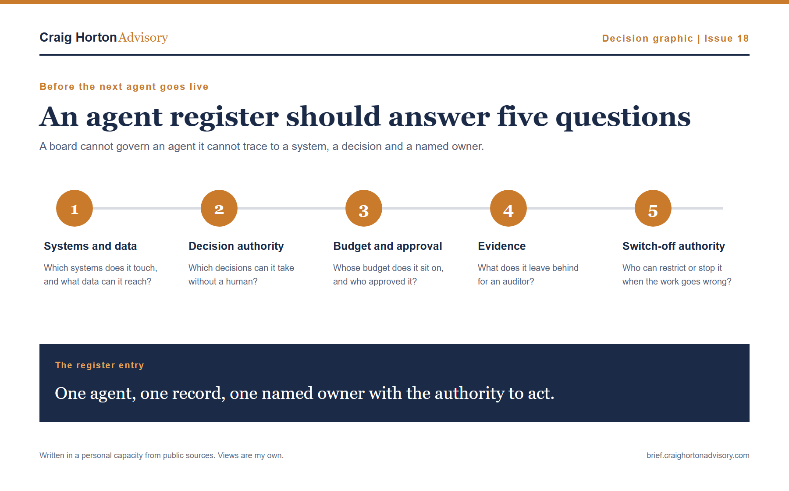

The lead signal
Can you count your agents?
SAP LeanIX published research this week covering 228 enterprise architects and IT decision-makers, with 44% of companies already deploying AI agents, 40% experimenting with them and another 14% planning to, yet only 17% have visibility of agent performance or conformance, while 48% have no clear roles or responsibilities for managing them.
SAP calls this agent sprawl, which happens when agents are created, deployed or connected across systems faster than the organisation can inventory them, assign ownership, control permissions, monitor their behaviour or retire them when they no longer fit.
We have seen this pattern before with shadow IT, except an agent can carry credentials, reach across systems, call other tools and take actions at a speed most approval processes were never designed to govern.
For every agent operating today, I would want its register to answer five questions:
- Which systems does it touch, and what data can it reach?
- Which decisions can it take without a human?
- Whose budget does it sit on, and who approved it?
- What evidence does it leave behind for an auditor?
- Who has the authority to restrict it or switch it off?

The five fields I would want completed before the next agent enters a live workflow.
Most organisations can name the platform and explain the task, then the answers become less clear when ownership, decision authority and evidence are discussed, especially when the agent crosses from one function into another and the outcome no longer belongs neatly to IT, HR, Legal or the business.
The delayed high-risk deadline has given organisations time to complete this work, and I would use that time to ask for the inventory, permissions, decision rights and named owners before the agent estate becomes too large for anyone to understand properly.
The question I would take into the room
Before your next agent goes live, can you produce its register entry, show the decisions it can take without a human, name whose budget it sits on, explain the evidence it leaves behind and identify the person with the authority to switch it off?